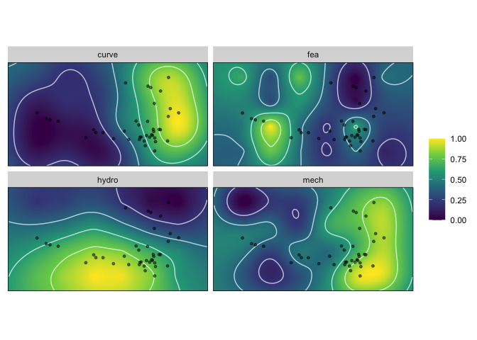
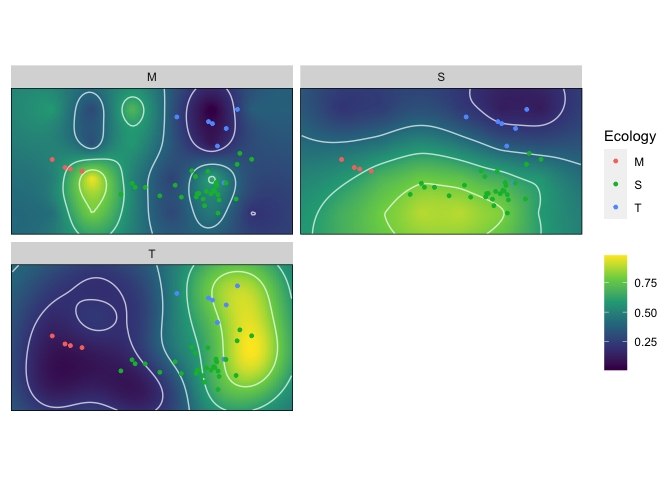

Morphoscape is a package designed for the constructions, analysis and visualization of spatially organized trait data into adaptive landscapes. Morphoscape provides a pipeline for combining spatial coordinate data derived from an ordinated morphospace, such as a PCA, with performance trait data; and finding ‘optimum’ adaptive landscapes from the combination of those trait data.
Morphoscape does not provide tools for the generation of morphospaces. For shape analyses and tools to ordinate multivariate phenotypic data, see the Geomorph or Morpho packages.
For an in-depth guide on using Morphoscape, and some discussion on morphospace design, see the vignette.
To install Morphoscape from GitHub you will need to install the devtools package and run install_github("blakedickson/Morphoscape"):
install.packages("devtools")
devtools::install_github("blakedickson/Morphoscape")The point of entry into Morphoscape is a dataframe containing two columns of XY coordinate data followed by columns containing performance variables. See the warps data object for an example. An additional dataframe turtles with specimen coordinates and grouping variables is also provided.
library(Morphoscape)
data('warps')
str(warps)#> 'data.frame': 24 obs. of 6 variables:
#> $ x : num -0.189 -0.189 -0.189 -0.189 -0.134 ...
#> $ y : num -0.05161 -0.00363 0.04435 0.09233 -0.05161 ...
#> $ hydro: num -1839 -1962 -2089 -2371 -1754 ...
#> $ curve: num 8.07 6.3 9.7 15.44 10.21 ...
#> $ mech : num 0.185 0.193 0.191 0.161 0.171 ...
#> $ fea : num -0.15516 -0.06215 -0.00435 0.14399 0.28171 ...#> 'data.frame': 40 obs. of 4 variables:
#> $ x : num 0.03486 -0.07419 -0.07846 0.00972 -0.00997 ...
#> $ y : num -0.019928 -0.015796 -0.010289 -0.000904 -0.029465 ...
#> $ Group : chr "freshwater" "softshell" "softshell" "freshwater" ...
#> $ Ecology: chr "S" "S" "S" "S" ...This dataframe is input into the as_fnc_df() which will coerce coordinate data into the correct format, and rescale performance variables to unit range.
Performance surfaces are calculated using krige_surf(), and can be used to just calculate surfaces, or also predict performance of new_data points.
kr_surf <- krige_surf(warps_fnc, hull = FALSE, new_data = turtles)#> [using ordinary kriging]
#> [using ordinary kriging]
#> [using ordinary kriging]
#> [using ordinary kriging]
#> [using ordinary kriging]
#> [using ordinary kriging]
#> [using ordinary kriging]
#> [using ordinary kriging]
plot(kr_surf)
To calculate adaptive landscapes based on groupings, first a population of landscapes is generated using generate_weights() and calc_all_lscps():
weights <- generate_weights(n = 10, data = kr_surf)
all_landscapes <- calc_all_lscps(kr_surf, grid_weights = weights)#> Calculating landscapes...
#> | | | 0% | |= | 0% | |= | 1% | |== | 1% | |=== | 1% | |=== | 2% | |==== | 2% | |===== | 2% | |===== | 3% | |====== | 3% | |======= | 3% | |======= | 4% | |======== | 4% | |========= | 5% | |========== | 5% | |=========== | 6% | |============ | 6% | |============= | 7% | |============== | 7% | |=============== | 8% | |================ | 8% | |================= | 9% | |================== | 9% | |=================== | 10% | |==================== | 10% | |===================== | 11% | |====================== | 12% | |======================= | 12% | |======================== | 13% | |========================= | 13% | |========================== | 14% | |=========================== | 14% | |============================ | 15% | |============================= | 15% | |============================== | 16% | |=============================== | 16% | |================================ | 17% | |================================= | 17% | |================================== | 18% | |=================================== | 18% | |=================================== | 19% | |==================================== | 19% | |===================================== | 19% | |===================================== | 20% | |====================================== | 20% | |======================================= | 20% | |======================================= | 21% | |======================================== | 21% | |========================================= | 21% | |========================================= | 22% | |========================================== | 22% | |=========================================== | 22% | |=========================================== | 23% | |============================================ | 23% | |============================================= | 23% | |============================================= | 24% | |============================================== | 24% | |=============================================== | 24% | |=============================================== | 25% | |================================================ | 25% | |================================================ | 26% | |================================================= | 26% | |================================================== | 26% | |================================================== | 27% | |=================================================== | 27% | |==================================================== | 27% | |==================================================== | 28% | |===================================================== | 28% | |====================================================== | 28% | |====================================================== | 29% | |======================================================= | 29% | |======================================================== | 29% | |======================================================== | 30% | |========================================================= | 30% | |========================================================== | 30% | |========================================================== | 31% | |=========================================================== | 31% | |============================================================ | 31% | |============================================================ | 32% | |============================================================= | 32% | |============================================================== | 33% | |=============================================================== | 33% | |================================================================ | 34% | |================================================================= | 34% | |================================================================== | 35% | |=================================================================== | 35% | |==================================================================== | 36% | |===================================================================== | 36% | |====================================================================== | 37% | |======================================================================= | 37% | |======================================================================== | 38% | |========================================================================= | 38% | |========================================================================== | 39% | |=========================================================================== | 40% | |============================================================================ | 40% | |============================================================================= | 41% | |============================================================================== | 41% | |=============================================================================== | 42% | |================================================================================ | 42% | |================================================================================= | 43% | |================================================================================== | 43% | |=================================================================================== | 44% | |==================================================================================== | 44% | |===================================================================================== | 45% | |====================================================================================== | 45% | |======================================================================================= | 46% | |======================================================================================== | 46% | |======================================================================================== | 47% | |========================================================================================= | 47% | |========================================================================================== | 47% | |========================================================================================== | 48% | |=========================================================================================== | 48% | |============================================================================================ | 48% | |============================================================================================ | 49% | |============================================================================================= | 49% | |============================================================================================== | 49% | |============================================================================================== | 50% | |=============================================================================================== | 50% | |================================================================================================ | 50% | |================================================================================================ | 51% | |================================================================================================= | 51% | |================================================================================================== | 51% | |================================================================================================== | 52% | |=================================================================================================== | 52% | |==================================================================================================== | 52% | |==================================================================================================== | 53% | |===================================================================================================== | 53% | |====================================================================================================== | 53% | |====================================================================================================== | 54% | |======================================================================================================= | 54% | |======================================================================================================== | 55% | |========================================================================================================= | 55% | |========================================================================================================== | 56% | |=========================================================================================================== | 56% | |============================================================================================================ | 57% | |============================================================================================================= | 57% | |============================================================================================================== | 58% | |=============================================================================================================== | 58% | |================================================================================================================ | 59% | |================================================================================================================= | 59% | |================================================================================================================== | 60% | |=================================================================================================================== | 60% | |==================================================================================================================== | 61% | |===================================================================================================================== | 62% | |====================================================================================================================== | 62% | |======================================================================================================================= | 63% | |======================================================================================================================== | 63% | |========================================================================================================================= | 64% | |========================================================================================================================== | 64% | |=========================================================================================================================== | 65% | |============================================================================================================================ | 65% | |============================================================================================================================= | 66% | |============================================================================================================================== | 66% | |=============================================================================================================================== | 67% | |================================================================================================================================ | 67% | |================================================================================================================================= | 68% | |================================================================================================================================== | 68% | |================================================================================================================================== | 69% | |=================================================================================================================================== | 69% | |==================================================================================================================================== | 69% | |==================================================================================================================================== | 70% | |===================================================================================================================================== | 70% | |====================================================================================================================================== | 70% | |====================================================================================================================================== | 71% | |======================================================================================================================================= | 71% | |======================================================================================================================================== | 71% | |======================================================================================================================================== | 72% | |========================================================================================================================================= | 72% | |========================================================================================================================================== | 72% | |========================================================================================================================================== | 73% | |=========================================================================================================================================== | 73% | |============================================================================================================================================ | 73% | |============================================================================================================================================ | 74% | |============================================================================================================================================= | 74% | |============================================================================================================================================== | 74% | |============================================================================================================================================== | 75% | |=============================================================================================================================================== | 75% | |=============================================================================================================================================== | 76% | |================================================================================================================================================ | 76% | |================================================================================================================================================= | 76% | |================================================================================================================================================= | 77% | |================================================================================================================================================== | 77% | |=================================================================================================================================================== | 77% | |=================================================================================================================================================== | 78% | |==================================================================================================================================================== | 78% | |===================================================================================================================================================== | 78% | |===================================================================================================================================================== | 79% | |====================================================================================================================================================== | 79% | |======================================================================================================================================================= | 79% | |======================================================================================================================================================= | 80% | |======================================================================================================================================================== | 80% | |========================================================================================================================================================= | 80% | |========================================================================================================================================================= | 81% | |========================================================================================================================================================== | 81% | |=========================================================================================================================================================== | 81% | |=========================================================================================================================================================== | 82% | |============================================================================================================================================================ | 82% | |============================================================================================================================================================= | 83% | |============================================================================================================================================================== | 83% | |=============================================================================================================================================================== | 84% | |================================================================================================================================================================ | 84% | |================================================================================================================================================================= | 85% | |================================================================================================================================================================== | 85% | |=================================================================================================================================================================== | 86% | |==================================================================================================================================================================== | 86% | |===================================================================================================================================================================== | 87% | |====================================================================================================================================================================== | 87% | |======================================================================================================================================================================= | 88% | |======================================================================================================================================================================== | 88% | |========================================================================================================================================================================= | 89% | |========================================================================================================================================================================== | 90% | |=========================================================================================================================================================================== | 90% | |============================================================================================================================================================================ | 91% | |============================================================================================================================================================================= | 91% | |============================================================================================================================================================================== | 92% | |=============================================================================================================================================================================== | 92% | |================================================================================================================================================================================ | 93% | |================================================================================================================================================================================= | 93% | |================================================================================================================================================================================== | 94% | |=================================================================================================================================================================================== | 94% | |==================================================================================================================================================================================== | 95% | |===================================================================================================================================================================================== | 95% | |====================================================================================================================================================================================== | 96% | |======================================================================================================================================================================================= | 96% | |======================================================================================================================================================================================= | 97% | |======================================================================================================================================================================================== | 97% | |========================================================================================================================================================================================= | 97% | |========================================================================================================================================================================================= | 98% | |========================================================================================================================================================================================== | 98% | |=========================================================================================================================================================================================== | 98% | |=========================================================================================================================================================================================== | 99% | |============================================================================================================================================================================================ | 99% | |============================================================================================================================================================================================= | 99% | |============================================================================================================================================================================================= | 100% | |==============================================================================================================================================================================================| 100%
all_landscapes#> An all_lscps object
#> - functional characteristics:
#> hydro, curve, mech, fea
#> - number of landscapes:
#> 286
#> - weights incremented by:
#> 0.1
#> - new data:
#> 40 rowsOptimal landscapes for groups are then calculated using calcWprimeBy() and can be statistically compared using multi.lands.grp.test():
wprime_by_Group <- calcWprimeBy(all_landscapes, by = ~Ecology)
wprime_by_Group#> - Ecology == "M"
#>
#> Optimal weights:
#> Weight SE SD Min. Max.
#> hydro 0.15 0.06455 0.1291 0.0 0.3
#> curve 0.00 0.00000 0.0000 0.0 0.0
#> mech 0.00 0.00000 0.0000 0.0 0.0
#> fea 0.85 0.06455 0.1291 0.7 1.0
#>
#> Average fitness value at optimal weights:
#> Value SE SD Min. Max.
#> Z 0.7686 0.01039 0.02078 0.7444 0.7927
#> -----------------------------------------
#> - Ecology == "S"
#>
#> Optimal weights:
#> Weight SE SD Min. Max.
#> hydro 0.85556 0.02422 0.07265 0.8 1.0
#> curve 0.05556 0.02422 0.07265 0.0 0.2
#> mech 0.05556 0.02422 0.07265 0.0 0.2
#> fea 0.03333 0.01667 0.05000 0.0 0.1
#>
#> Average fitness value at optimal weights:
#> Value SE SD Min. Max.
#> Z 0.7496 0.005665 0.017 0.7326 0.7835
#> -----------------------------------------
#> - Ecology == "T"
#>
#> Optimal weights:
#> Weight SE SD Min. Max.
#> hydro 0.00 0.00000 0.0000 0.0 0.0
#> curve 0.85 0.06455 0.1291 0.7 1.0
#> mech 0.15 0.06455 0.1291 0.0 0.3
#> fea 0.00 0.00000 0.0000 0.0 0.0
#>
#> Average fitness value at optimal weights:
#> Value SE SD Min. Max.
#> Z 0.7646 0.008862 0.01772 0.744 0.7852
#>
#> - method: chi-squared, quantile = 0.05
summary(wprime_by_Group)#> Optimal weights by Ecology:
#> W_hydro W_curve W_mech W_fea Z
#> M 0.15000 0.00000 0.00000 0.85000 0.76856
#> S 0.85556 0.05556 0.05556 0.03333 0.74959
#> T 0.00000 0.85000 0.15000 0.00000 0.76457
plot(wprime_by_Group, ncol = 2)
tests <- multi.lands.grp.test(wprime_by_Group)
tests#> Pairwise landscape group tests
#> - method: chi-squared | quantile: 0.05
#>
#> Results:
#> M S T
#> M - 0 0
#> S 0 - 0
#> T 0 0 -
#> (lower triangle: p-values | upper triangle: number of matches)To cite Morphoscape, please run citation("Morphoscape").